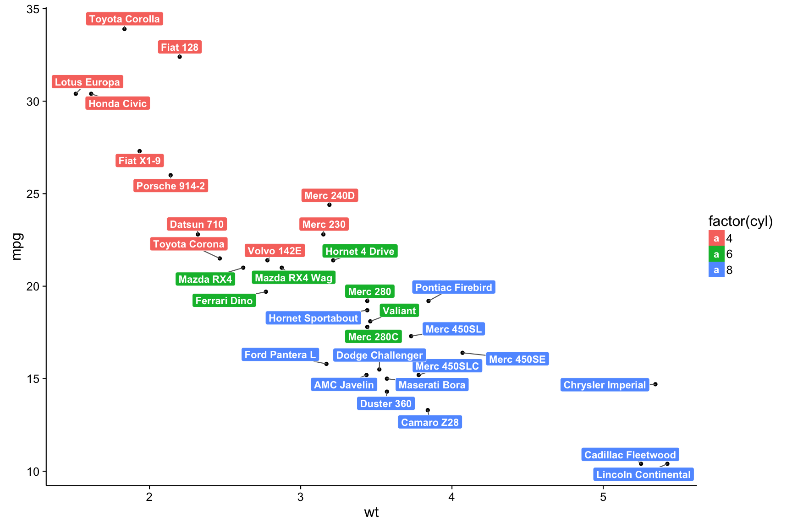
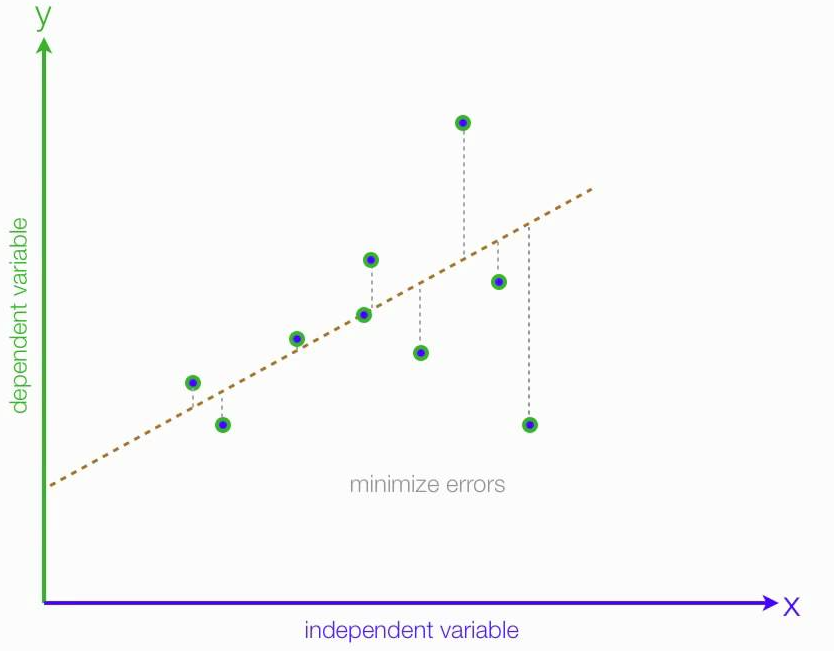

The Math behind Linear Regression
To perform supervised learning, we must decide how we’re going to represent the function h. Specifically, we have to decide the exact class of functions that we believe are viable for the problem. We can choose a linear relationship, quadratic, logarithmic, etc, so long as the type of function we choose, which we will call our model, is appropriate for the data we’re working with.
What we choose is the generic class of functions, for example, all linear functions, or all quadratic functions. We let the algorithm search through the space of all possible linear functions, or quadratic function, depending on our choice, and settle on that one particular function that performs best on our training set. This choice of ideal function from a class is often called fitting or training a model.

In the case of linear regression, we choose the class of functions known as linear functions. It would be the same, in common parlance, to say that we chose the linear model. Our goal with the linear model is to predict the labels based on the input variables, or elements in our x vectors. Using the following equation, we assert that the label of any point is a linear combination of that point:
where x is a single input vector, x1,x2,xd are the elements of that vector, and w is a weight vector. The w's are the parameters of the linear model. Our goal requires that we find a set of Ws that fit our model assertion.
When there is no risk of confusion, we will drop the w in h(w, x), and write it as h(x). If we concatenate a 1 to the beginning of the x vector, and refer to this one as x0, then our linear function can be expressed as a dot product:
Now, if our data happens to all fall on a line, then there exists some weights with which our model will fit perfectly. If, as is always the case, the data does not fall perfectly on a line, then there is no perfectly fitting vector of weights.
Our training algorithm, then, should find the “best” set of weights. We define the best set as those that minimize an error function, given by:
Where m is the number of datapoints in our dataset. This function takes, for some w, the difference between the label our model returns with that w, and the true label. This function is smallest when h(x) = y, or when our model is perfectly returning the label for some point. It can be seen as a sum of error for each point, and is called the sum-squared error function.
